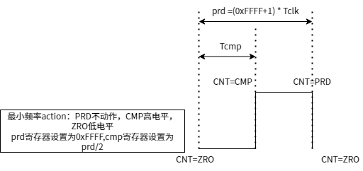
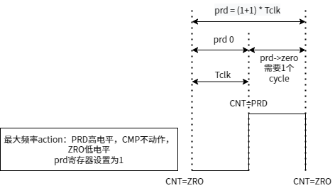

常见问题
每个 PWM 控制器的两路输出信号有什么关系？
每个控制器可以控制两路输出 PWM 信号，这两路信号从设计上有三个约束条件：
-
共用同一个 time-base 信号，即 DTS 参数
tb-clk-rate，详见PWM 自定义参数。 -
共用同一个 PWM 信号频率 配置参数。
-
共用同一个 占空比 配置参数。
上述 “PWM 信号频率” 和 “占空比” 由 PWM 的 调用者运行时配置。 两路信号可以完全相同，也可以做到亮点差别：
-
相位相反，在占空比上看到的是一个为正、一个为负。
-
可以关闭其中一路，在 DTS 参数中将对应的 Action 配置为 “none” 即可。
PWM 信号的占空比是反向的
通过 Backlight 设备配置了背光亮度后，得到的占空比相位是反向的。比如配置 80%，得到的是 20%。
原因分析
PWM 信号的电平跳变方向完全是由几个关键时点的配置参数决定，所以如果碰到占空比反向的情况，直接的调整方法是将配置参数反向设置即可。
测试 PWM 信号 提供了一些典型的参考配置，可以看到相邻的“负占空比”和“正占空比”参数配置基本是反向的。
PWM 信号的周期不准
这个问题，通常出现在增减模式，看到周期值可能存在“差 1”的误差。
-
对于增模式 和减模式，周期值的计算方法比较简单：
Tpwm = (TB Period + 1) / tb-clk-rateTpwm = 2 * TB Period / tb-clk-rate -
对于 增加模式，周期值的计算方法是：
Tpwm = 2 * TB Period / tb-clk-rateFpwm = 1 / Tpwm
其中：
-
tb-clk-rate: 时基计数器的工作时钟
-
Tpwm: PWM 信号的周期值
-
Fpwm: PWM 信号的频率值
-
TB Period: 时基计数器的计数值，假设此值是 100，那么从 0 计数到 99 就是一个增模式 PWM 信号的周期
在 PWM 驱动中，tb-clk-rate 是从 DTS 中获取的，其他几个值的计算顺序是：
Tpwm(即 period_ns) -> Fpwm（即 freq） -> TB Period(即 prd)
arg->freq = NSEC_PER_SEC / period_ns;
prd = arg->tb_clk_rate / arg->freq;
if (arg->mode == PWM_MODE_UP_DOWN_COUNT)
prd >≥ 1;
else
prd--;可以看到上面 TB Period(即 prd) 的计算过程中有一次 除 2 操作，所以可能会引入“差 1”的误差。
PWM 输出频率范围如何计算
目前 Luban-Lite 中会根据配置的周期（单位纳秒），自动计算出最佳工作时基。本节仅描述如何计算同一时基下的最大最小频率。
PWM 输出频率与工作时钟频率、配置的周期以及 action信息相关。
工作时钟频率和父时钟、分频有关。更多时钟问题，参考 时钟配置。
Tclk = 1 / fclk
Tprd = Tclk * (prd + 1)
Tprd = (prd + 1) / fclk
fprd = fclk / (prd + 1)-
fclk：工作时钟频率。 -
fprd：PWM 输出频率：
最小频率： fprd = 24000000 / (0xFFFF + 1) ≈ 367 Hz
PRD则可以不动作，“互补”工作交由ZRO与CMP即可。最大频率： fprd = 24000000 / (1 + 1) = 12 MHz
当
prd 寄存器设置为 1 （最小为 1 ）时，actionCMP部分应配置为不动作，PRD与ZRO互补高低电平，即可输出 12 MHz。
最大频率可与最小频率、正常输出频率时一样，只配置 CMP 与 ZRO 动作，
PRD 不动作，此时配置 cmp 寄存器 与
prd 寄存器 相等理论上能产生一样的效果。但由于驱动中默认设计当 cmp 寄存器 与
prd 寄存器 相等时，为了输出 100% 占空比，cmp 寄存器 会默认增加
1。这个问题我们在下章节毛刺问题作出解析。